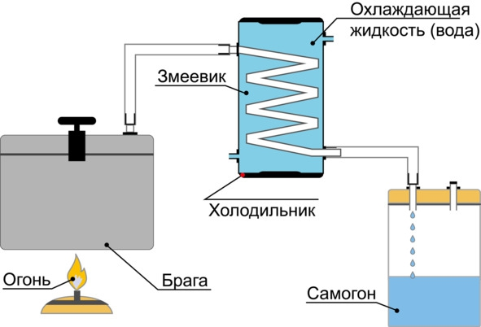
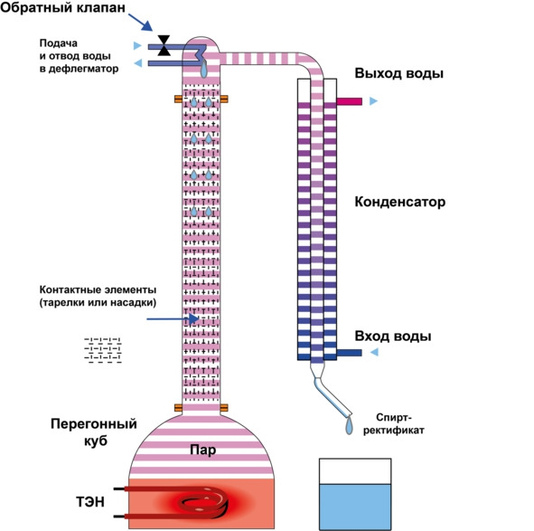
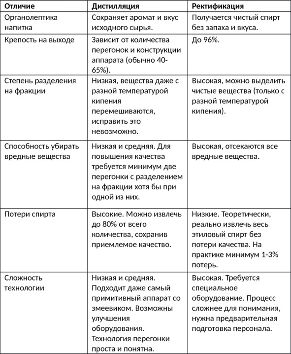

О культуре пития .. Дистилляция и ректификация – две технологии получения крепкого алкоголя. . .


Если для приготовления вина или пива сразу после брожения переходят к выдержке и бутилированию напитков, то в случае с крепким алкоголем (водкой, виски, коньяком и т. д.) сначала нужно получить более-менее чистый спирт, чтобы избавиться от большинства других примесей. Для этого отыгравшую брагу либо дистиллируют (перегоняют на самогонном аппарате), либо подвергают ректификации с помощью специальной колонны.
Понятие дистилляции
В приготовлении спиртных напитков под дистилляцией (от лат. distillatio – стекание каплями) понимают процесс испарения спиртосодержащей смеси с последующим охлаждением и конденсацией образовавшихся паров для отделения спирта от других веществ в браге. Полученная в итоге жидкость называется дистиллятом, а само устройство – дистиллятором. Однако в России зачастую термин «дистилляция» заменяют синонимом – «перегонка».
Принцип работы дистиллятора. Жидкость доводят до кипения в перегонном кубе, образовавшиеся пары поступают в охладитель («змеевик») – изогнутую трубку, охлаждаемую водой или другим способом, где переходят в жидкое состояние и стекают в приемную емкость. Самый примитивный самогонный аппарат состоит из источника нагрева, куба для браги, охладителя, соединительных элементов (трубок, по которым движется пар) и приемной емкости для сбора дистиллята.

Схема работы самогонного аппарата
Теоретически дистилляция основана на том, что все компоненты браги имеют разную температуру кипения, вследствие чего можно получить чистые фракции. Однако на практике вещества с примерно равной температурой кипения в парообразном состоянии перемешиваются и не поддаются разделению на отдельные компоненты. Это значит, что после дистилляции в спирте обязательно останутся другие примеси, полностью убрать которые невозможно физически, выход получается «смазанным». Несмотря на этот недостаток, большинство крепких алкогольных напитков (коньяк, виски, текила и т. д.) получают именно методом дистилляции. Производитель старается минимизировать количество вредных компонентов, но оставить большинство полезных, которые во многом формируют аромат и вкус алкоголя. Это делается с помощью так называемой дробной перегонки.
Дробная перегонка: «головы», «тело» и «хвосты» дистиллята
Количество вредных примесей зависит от сырья, воды, дрожжей, температуры, длительности брожения, конструкции самогонного аппарата и технологии перегонки. Методика приготовления большинства напитков предусматривает две-три дистилляции. Цель первой перегонки – получить более-менее чистый продукт (на языке технологов называется спирт-сырец), качество которого проще улучшать. Первую дистилляцию прекращают, когда крепость в струе падает ниже 25—30%. Полученный спирт-сырец (зачастую мутная жидкость с содержанием спирта до 40%) перегоняют еще минимум один раз, однако, чтобы получить уже качественный напиток, весь дистиллят разделяют на три части (фракции): «голову», «тело» и «хвосты».
«Голова» («первач» или «первак») – начальная фракция с резким неприятным запахом. Содержит самые опасные примеси: метиловый спирт (много в зерновых и фруктовых брагах), ацетон, уксусный альдегид и другие. Благодаря тому, что температура кипения вредных веществ ниже, чем у этилового спирта, при перегонке они выходят первыми, следовательно, можно не допустить их попадания в основной продукт.
В обиходе первач считается самым качественным самогоном, поскольку крепкий и быстро опьяняет. Но на самом деле это яд в чистом виде, его употребление вызывает токсическое отравление, которое часто путают с опьянением.
«Тело» или «сердце» – средняя фракция, питьевая часть, основа любого крепкого напитка. Отбирается после «головы», когда дистиллят содержит минимум вредных веществ и максимум полезных.
«Хвост» – третья фракция, которая кроме этилового спирта содержит сивушные масла, дающие неприятный запах и мутный цвет. Температура кипения сивухи выше, чем у этилового спирта, поэтому чтобы отделить «хвост», достаточно вовремя прекратить сбор основного продукта – «тела».
В дальнейшем для приготовления напитка используют только среднюю фракцию – возможна очистка дистиллята углем (характерно для зернового сырья) и выдержка в бочках, металлических, керамических или стеклянных емкостях. «Голова» и «хвост» также содержат некоторое количество чистого спирта, но добыть его методом дистилляции нельзя, зато можно ректифицировать, получив чистый спирт.
Суть ректификации
Ректификация спирта – разделение многокомпонентной спиртосодержащей смеси на чистые фракции (этиловый и метиловый спирты, воду, сивушные масла, альдегиды и другие), имеющие разную температуру кипения, путем многократного испарения жидкости и конденсации пара на контактных устройствах (тарелках или насадках) в специальных противоточных башенных аппаратах – ректификационных колоннах.
Принцип работы ректификационной колонны. Жидкость в кубе доводят до кипения. Образовавшийся пар поднимается вверх по колонне и попадает в дефлегматор, где охлаждается и конденсируется (появляется флегма), затем по стенкам трубы возвращается в жидком виде в нижнюю часть колонны, на обратном пути контактируя с поднимающимся паром на тарелках или насадках. Под действием нагревателя флегма снова становится паром, а пар вверху – опять конденсируется дефлегматором. Процесс становится циклическим, оба потока непрерывно контактируют друг с другом.
После стабилизации (пара и флегмы достаточно для равновесного состояния) в верхней части колонны скапливаются чистые (разделенные) фракции с самой низкой температурой кипения (метиловый спирт, уксусный альдегид, эфиры, этиловый спирт), внизу – с самой высокой (сивушные масла). По мере отбора нижние фракции постепенно поднимаются вверх по колонне.

Схема работы ректификационной колонны
С физической точки зрения ректификация возможна, поскольку изначально концентрация отдельных компонентов смеси в паровой и жидкой фазах отличается, но система стремится к равновесию – одинаковому давлению, температуре и концентрации всех веществ в каждой фазе. При контакте с жидкостью пар обогащается легколетучими (низкокипящими) компонентами, в свою очередь, жидкость – труднолетучими (высококипящими). Одновременно с обогащением происходит обмен теплом. Момент контакта (взаимодействия потоков) пара и жидкости называется процессом тепломассообмена.
Ректификационная колонна не избавляет от необходимости разделять выход на фракции. Как и в случае с обычным дистиллятором, приходится собирать «голову», «тело» и «хвост». Разница только в чистоте выхода. При ректификации фракции не «смазываются» – вещества с близкой, но хотя бы на десятую долю градуса разной температурой кипения не пересекаются, поэтому при отборе «тела» получается практически чистый спирт, чего нельзя достигнуть при дистилляции, какая бы конструкция аппарата не использовалась.
Преимущество ректификации – в возможности добыть практически весь содержащийся в жидкости спирт без потери его качества. Недостаток – теряется органолептика исходного сырья, это значит, что вкус алкогольного напитка из ячменя и яблок будет одинаковым. Спирт-ректификат используется только для производства водки, иногда в ликерах, настойках и наливках. В технологии приготовления некоторых других крепких напитков, например текилы и виски, допустимо смешивание ректификата и дистиллята в определенном соотношении. Обычно доля дистиллята не меньше 51%, и чем качественнее напиток, тем меньше в нем ректификата.
Разница между дистилляцией и ректификацией (водкой и самогоном)
Разница между двумя процессами показана в таблице.
